Texto
El área es la medida de la superficie interior de una figura plana. Para calcularla, utilizamos fórmulas que dependen de sus elementos principales (base, altura, diagonales, radio, apotema…).
CUADRADO
El área del cuadrado se obtiene multiplicando un lado por sí mismo.
A = L × L = L²
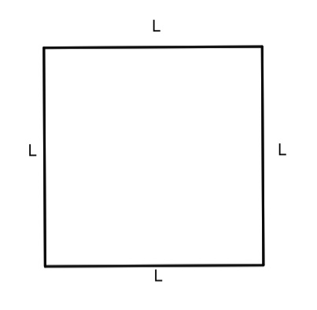
RECTÁNGULO
El área del rectángulo se calcula multiplicando su base por su altura.
A = base × altura
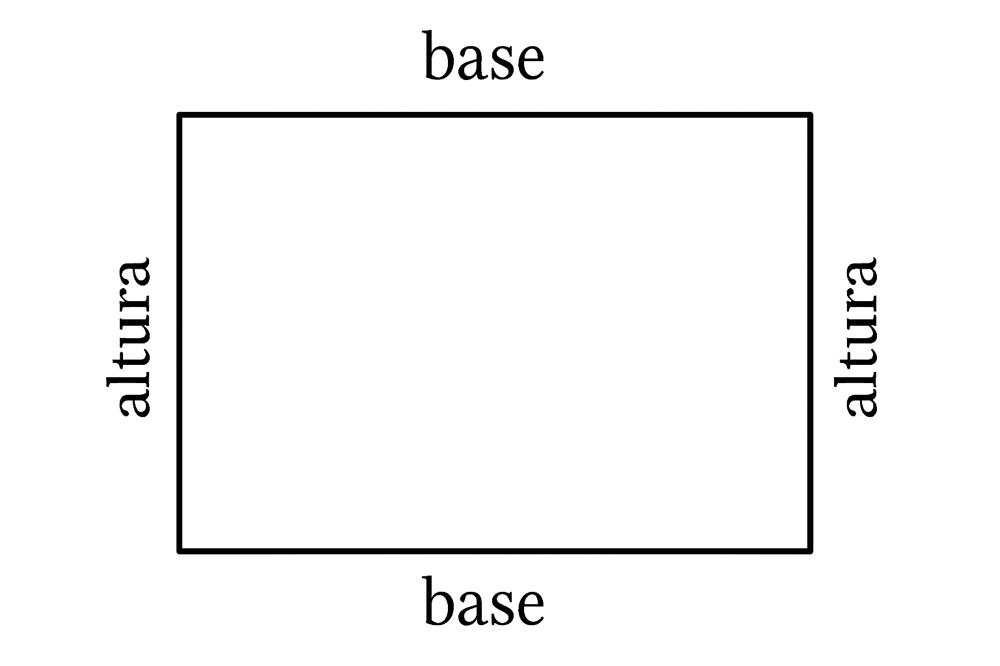
ROMBOIDE (PARALELOGRAMO)
Al igual que el rectángulo, el área depende de la base y de la altura perpendicular a esa base.
A = base × altura
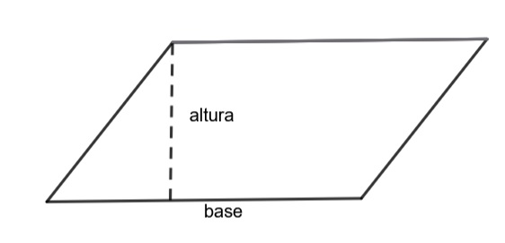
ROMBO
En el rombo no usamos base y altura, sino sus dos diagonales.
Multiplicamos las dos diagonales y dividimos entre dos:
A = (D × d) / 2
D=diagonal mayor
d=diagonal menor
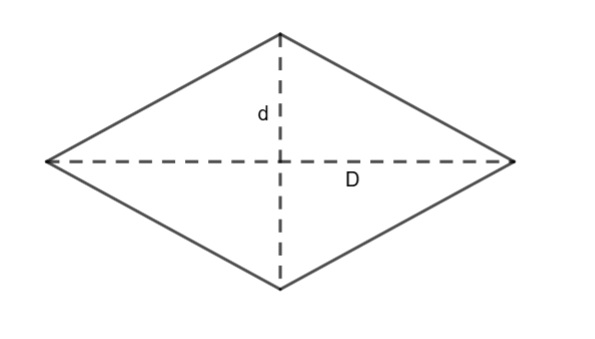
TRIÁNGULO
El área se obtiene multiplicando la base por la altura y dividiéndolo entre dos.
A = (base × altura) / 2
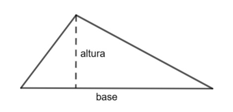
TRAPECIO
Tiene dos bases (mayor y menor). Primero se hace la media de ambas y luego se multiplica por la altura:
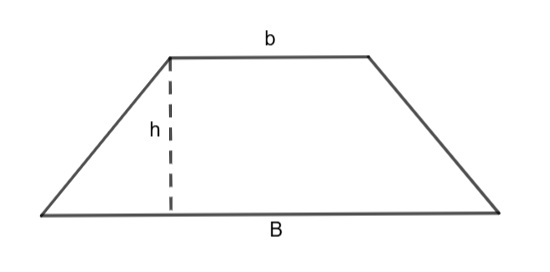
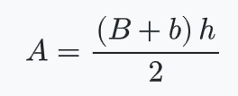
B=Base mayor
b=base menor
h=altura
POLÍGONO REGULAR
El área depende del perímetro y de la apotema (distancia del centro al centro de un lado).
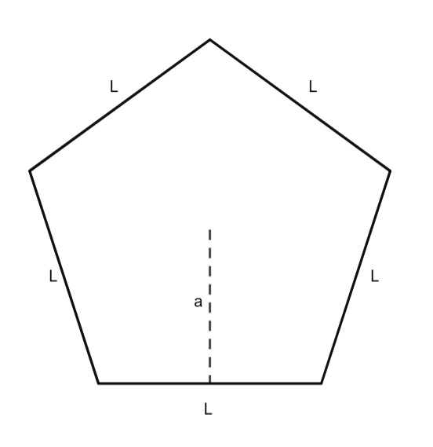
A = (Perímetro × apotema) / 2
Si sabes el número de lados (n) y el lado (L):
A = (n × L × apotema) / 2
ÁREA DEL CÍRCULO
El área del círculo depende únicamente de su radio. El radio (r) es la distancia desde el centro hasta cualquier punto de la circunferencia. Para calcular el área del círculo utilizamos la siguiente fórmula:
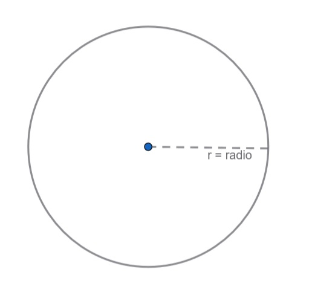
A = π · r²
SECTOR CIRCULAR (una “porción” del círculo)
El área depende del ángulo central (α ) y del radio (r):
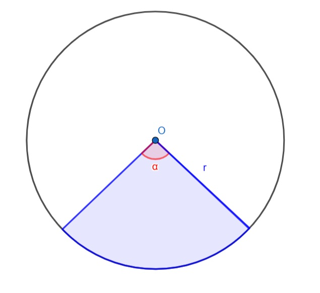
A = ( α / 360°) × π × r²
CORONA CIRCULAR (región entre dos circunferencias concéntricas)
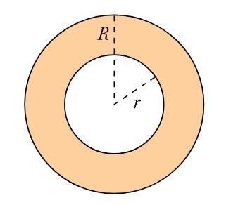
A = π (R² – r²)
donde:
R = radio mayor
r = radio menor